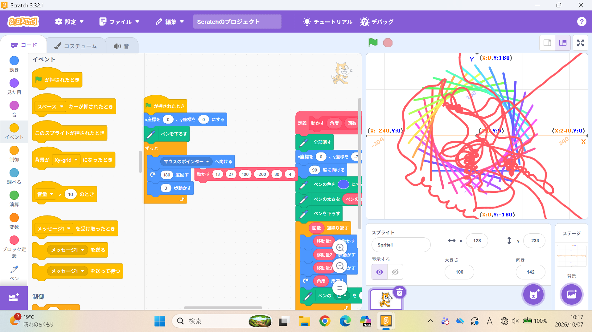
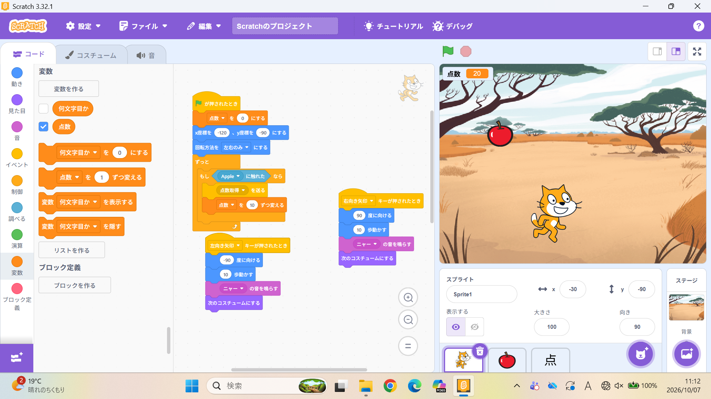

1週目のレポート ： 公大高専１年実習I-1
4班28番 はも
第1週目
1-1 サイエンスアート

1.内容
Scratchのキャラクターを動かす方法や新しく追加する方法などを学んだ。
Scratchでペンを使って線を描く方法を学んだ。
図形の書き方を学んだ
2.感想
もうすでにしたことのあることだったけれど
最近はあまりscratchに触れる機会がなかったので
久しぶりに触れるいい経験になった。
1-2 ゲーム

1.内容
キーボード入力でキャラクターを動かす方法を学んだ。
変数を使うことによって点数を表す方法を学んだ。
Scratchの基礎的な内容を学んだ。
2.感想
もともとScratchは何回か触ったことのある言語だったので操作感を少し改善したり
時間内にはできなかったけれど点数をスプライトの状態で表示させようとした。
1-3 ホームページ作成
私のホームページ
1.内容
githubのアカウントを作成し、自分について書いてあるホームページを作成した。
既存の文章が用意されていたのでそれを活用して作成した。
2.感想
githubは名前は知っていたけど触ったことがなかったので知らない内容だった。
途中のbrとかdivとかたくさん書いてあってどんな内容を実行させているのか
気になった。
各ページへのリンク
1週目のレポート
2週目のレポート
3週目のレポート
私のホームページ